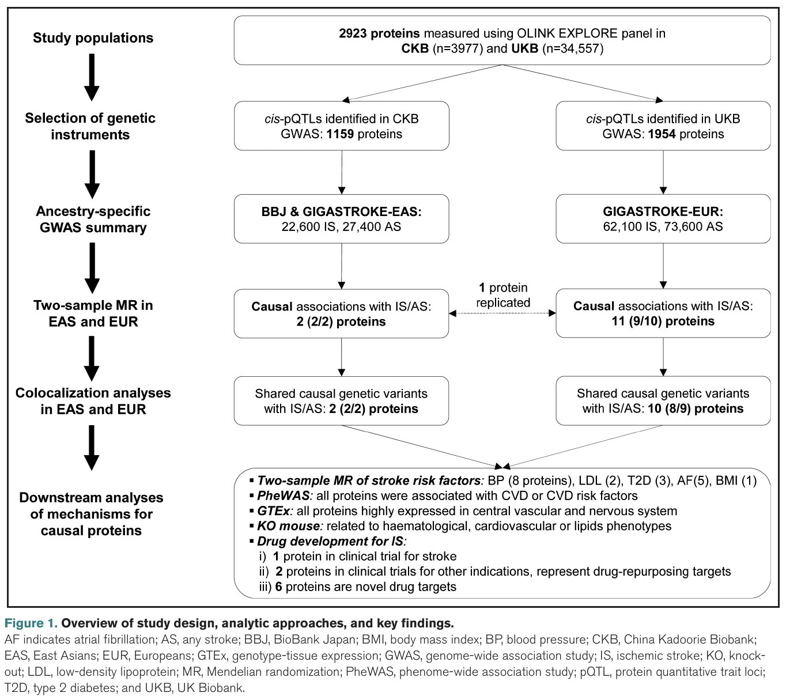
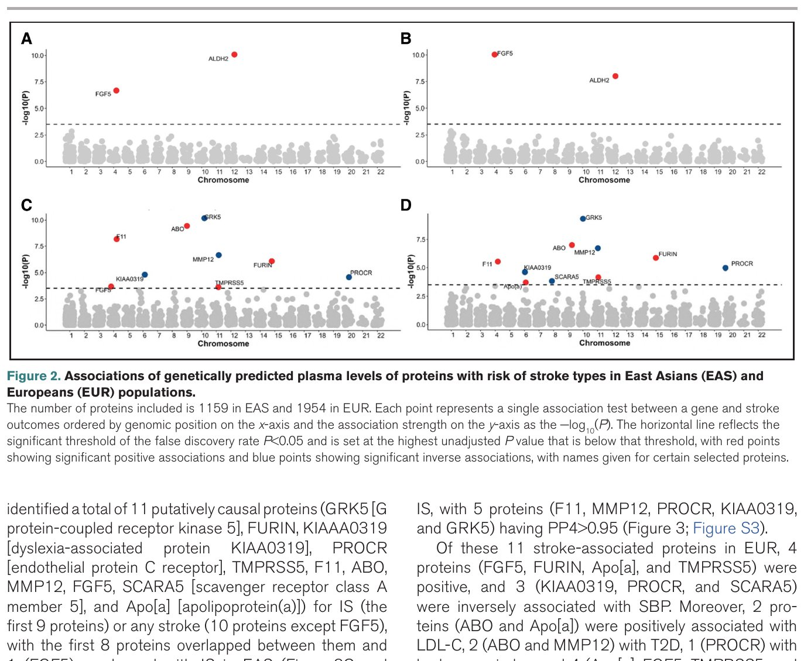
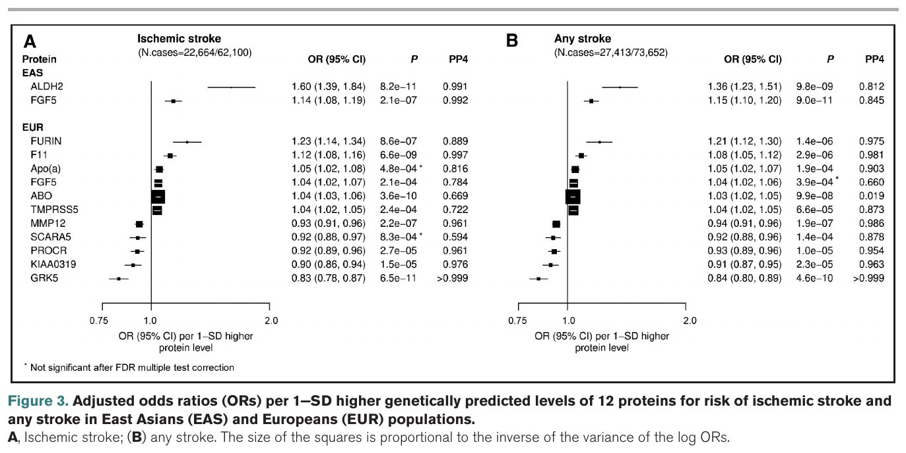
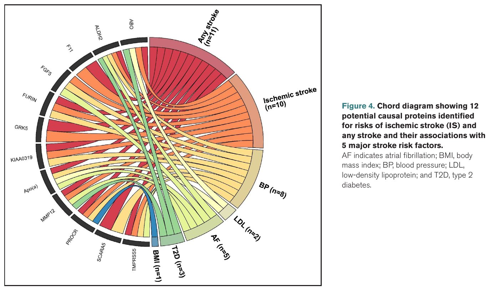
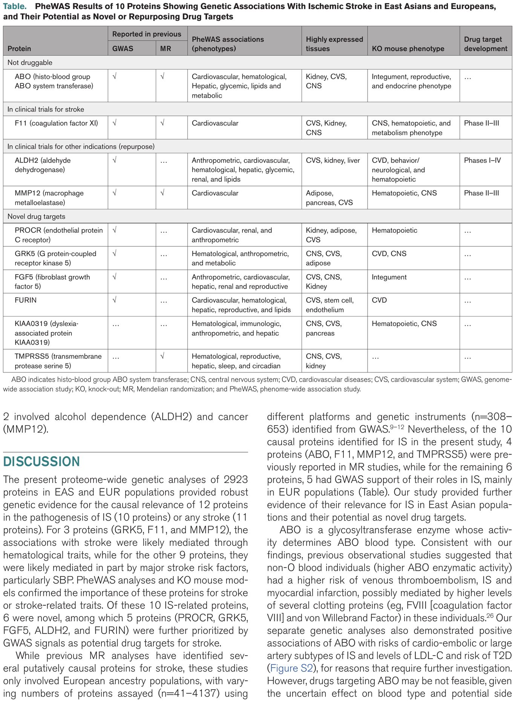

Proteome-Wide Genetic Study in East Asians and Europeans Identified Multiple Therapeutic Targets for Ischemic Stroke
本文本质上是用基因变异作为"自然随机对照试验"来解决一个核心问题：改变某种蛋白在血液中的水平，是否会因果性地增加或降低缺血性卒中的风险？ 如果答案是"是"，那么这种蛋白就可以成为药物的靶点——开发药物来抑制（或增强）该蛋白的功能，从而预防卒中。
📖 原文出处：阅读导引 / Background传统的观察性研究容易受到混杂因素和反向因果的干扰（例如，某种蛋白水平高的人卒中风险也高，可能是因为他们本身就有其他疾病，而不是蛋白本身导致卒中）。而孟德尔随机化（MR）利用基因变异作为蛋白水平的"代理"，这些基因变异从出生时就随机分配（类似于随机对照试验中的随机分组），因此可以推断因果方向。
更重要的是，以往类似研究几乎只局限于欧洲人群。但东亚人群的卒中发病率、危险因素分布和遗传结构都与欧洲人群有很大差异——在这一个人群中发现的靶点未必适用于另一个人群。本研究首次在东亚和欧洲双人群中进行了蛋白质组范围的系统筛查。
| 缩写 | 英文全称 | 中文 | 一句话解释 |
|---|---|---|---|
| MR | Mendelian Randomization | 孟德尔随机化 | 用基因变异作为工具变量推断因果的方法 |
| pQTL | protein Quantitative Trait Loci | 蛋白数量性状位点 | 影响蛋白表达水平的基因位点 |
| cis-pQTL | — | 顺式pQTL | 位于编码基因附近的pQTL，较少受多效性干扰 |
| GWAS | Genome-Wide Association Study | 全基因组关联研究 | 扫描全基因组寻找与性状关联的变异 |
| IS | Ischemic Stroke | 缺血性卒中 | 因血管阻塞导致的脑卒中（约占全部卒中的80%） |
| PP4 | Posterior Probability for H4 | H4假设后验概率 | 蛋白和疾病共享同一因果变异的概率（>0.7为强证据） |
| OR | Odds Ratio | 比值比 | 每SD蛋白水平升高对应的疾病风险倍数 |
| PheWAS | Phenome-Wide Association Study | 全表型组关联研究 | 同时检验基因变异与数百种表型的关联 |
| CKB | China Kadoorie Biobank | 中国慢性病前瞻性研究 | 包含51万中国成年人的大型前瞻性队列 |
| UKB | UK Biobank | 英国生物银行 | 包含50万英国成年人的大型前瞻性队列 |
| EAS | East Asians | 东亚人群 | — |
| EUR | Europeans | 欧洲人群 | — |
| SBP | Systolic Blood Pressure | 收缩压 | — |
| LDL-C | Low-Density Lipoprotein Cholesterol | 低密度脂蛋白胆固醇 | — |
| T2D | Type 2 Diabetes | 2型糖尿病 | — |
| AF | Atrial Fibrillation | 心房颤动 | — |
| BMI | Body Mass Index | 体重指数 | — |
本文是一个跨种族（东亚+欧洲）的蛋白质组范围MR研究，旨在系统发现缺血性卒中的新型药物靶点。核心方法链为：GWAS发现cis-pQTL → 两样本MR检验因果性 → 共定位确认共享因果变异 → 多种下游分析验证机制和可成药性。
📖 原文出处：阅读导引 / Background卒中（中风）是全球第二大致死原因，每年造成超过650万人死亡和大量长期残疾。打个比方：每2秒就有1人发生卒中；每4人中就有1人在一生中会经历卒中。而缺血性卒中（IS）——因血栓堵塞脑血管导致的卒中——占据了所有卒中的约80%。
📖 原文出处：Background（卒中全球负担）尽管过去几十年在卒中预防和治疗方面取得了巨大进展——例如他汀类药物（降胆固醇）和降压药物的广泛应用——但卒中依然是全球公共卫生的重大挑战。现有的治疗策略主要针对高血压、血脂异常等已知的中间危险因素，而直接靶向卒中发生通路的新型药物严重匮乏。
2022年，一项跨种族GWAS研究在Nature上报道了与卒中类型相关的89个独立基因位点（其中61个为首次发现）。然而，GWAS信号本身通常落在非编码区，仅凭基因位点难以直接推断因果基因和致病机制。
血浆蛋白处于人类生物学的核心位置，也是最主要的药物靶点来源。据估算，约95%的已获批药物的作用靶点是蛋白质。因此，将基因组数据（GWAS）与蛋白质组数据（pQTL）整合，可以：
| 前人研究的局限 | 本研究的改进 |
|---|---|
| 几乎只包含欧洲人群 | 同时纳入东亚人群（CKB）和欧洲人群（UKB），实现跨种族验证 |
| 蛋白数量有限（41–653种） | 使用Olink Explore 3072 panel覆盖2923种蛋白 |
| 卒中GWAS样本量较小 | 使用迄今最大的种族特异性卒中GWAS（EAS: 22664例; EUR: 62100例） |
| 仅进行MR分析 | MR + 共定位 + 中介分析 + PheWAS + 组织表达 + KO小鼠 + 药物数据库查询 |
| 仅发现靶点，缺乏机制验证 | 通过调解分析和PheWAS阐明蛋白→卒中因果通路 |
本研究的三个核心目标：(1) 利用cis-pQTL评估2923种蛋白与IS的因果关系（MR + 共定位）；(2) 揭示蛋白通过何种通路（血压、血脂、血糖、BMI、房颤等中间危险因素）影响卒中；(3) 评估因果蛋白的可成药性、预测副作用和额外适应症。
📖 原文出处：Background（前人研究局限）本节讲解研究方法——原论文 Figure 1 是研究设计总览，把"数据来源→pQTL→MR→下游验证"的完整证据链浓缩在一张图上，完整原图如下，可对照本节各小节讲解：

原论文 Figure 1：研究设计、分析方法与关键发现总览。这张总览图按分析流程编排：数据来源为 CKB（中国慢性病前瞻性研究）与 UKB（英国生物样本库）两个大队列的 Olink 蛋白质组检测（2,923 种蛋白）；分析链条为 cis-pQTL 鉴定（CKB 1,159 个、UKB 1,954 个蛋白，重叠 1,148 个）→ 两样本 MR（EAS：CKB+BBJ，971 个 cis-pQTL；EUR：UKB+GIGASTROKE，1,455 个 cis-pQTL）→ 共定位（coloc/SuSiE）→ 中介分析（BP、LDL、BMI、T2D、AF 五大危险因素）→ PheWAS（555 种疾病、642 种表型）→ KO 小鼠模型与 DrugBank/OpenTargets 药物数据库查询；关键发现为 EAS 中 ALDH2、FGF5 两个因果蛋白，EUR 中 11 个因果蛋白，合计 12 个潜在治疗靶点。图注缩写与正文一一对应：AF=房颤；AS=any stroke；BBJ=日本生物样本库；BMI=体重指数；BP=血压；CKB=中国 Kadoorie 生物样本库；EAS=东亚人群；EUR=欧洲人群；GTEx=基因型-组织表达数据库；GWAS=全基因组关联研究；IS=缺血性卒中；KO=基因敲除；LDL=低密度脂蛋白；MR=孟德尔随机化；PheWAS=全表型组关联研究；pQTL=蛋白数量性状位点；T2D=2型糖尿病；UKB=英国生物样本库。
图源：Yao et al., Stroke (2025)。
本研究的方法可以类比为一条"证据链"：每一环都在回答一个不同的问题。第一步回答"基因变异能不能作为蛋白水平的可靠代理？"；第二步回答"蛋白水平变化是否因果性地改变卒中风险？"；第三步回答"蛋白和卒中的遗传信号是否来自同一个因果变异？"；之后的每一步都在回答"这个蛋白到底通过什么机制影响卒中，以及它值不值得作为药物靶点？"。
📖 原文出处：Background（前人研究局限）| 特征 | CKB（东亚） | UKB（欧洲） |
|---|---|---|
| 总样本量 | 512,724 | 503,317 |
| 蛋白质组学样本 | 3,977（无CVD史、未服用降脂药） | 54,306（UKB-PPP子集） |
| 检测平台 | Olink Explore 1536 + Expansion | Olink Explore 3072 |
| 蛋白数量 | 2,923 | 2,923（相同panel） |
| 检测技术 | PEA（邻位延伸分析） | PEA |
Proximity Extension Assay（PEA，邻位延伸分析）是一种高通量蛋白质组学技术。每种目标蛋白配有一对抗体，每支抗体偶联一段独特的DNA寡核苷酸链。当两支抗体同时结合到同一蛋白分子上时，两段DNA链靠近并通过PCR延伸形成可扩增的DNA报告分子。扩增产物通过qPCR或NGS读出。PEA实现了高特异性（双抗体识别）+ 高灵敏度（PCR信号放大）的组合，仅需微量血浆样本即可同时测量数千种蛋白。
📖 原文出处：Methods（研究人群与蛋白质组学检测）pQTL（protein Quantitative Trait Loci）是指与蛋白表达水平显著相关的遗传位点。根据与编码基因的距离，分为两类：
cis-pQTL的显著性阈值设定为 $P < 1.7 \times 10^{-11}$（即 $5 \times 10^{-8} / 2923$ 的Bonferroni多重检验校正）。对于有多个cis-pQTL的蛋白，仅使用P值最小的领先变异作为工具变量。
假设一个trans-pQTL同时影响蛋白质A的表达和蛋白质B的表达，且B才是真正影响卒中的蛋白。如果只用这个trans-pQTL作为A的工具变量，就可能错误地得出"A导致卒中"的结论(这就是水平多效性的问题)。而cis-pQTL位于A的编码基因旁边，它的效应更"专一"——主要是通过调控A的表达来发挥作用，大大降低了这种偏倚风险。
📖 原文出处：Methods（cis-pQTL发现与遗传工具变量）Wald比值法（Wald ratio method）是最简单的MR估计器。对于单个遗传变异 $G$：
$$\hat{\beta}_{MR} = \frac{\hat{\beta}_{GY}}{\hat{\beta}_{GX}}$$
其中 $\hat{\beta}_{GX}$ 是 $G$ 对暴露 $X$（蛋白水平）的效应，$\hat{\beta}_{GY}$ 是 $G$ 对结局 $Y$（卒中）的效应。两者的比值估计了暴露对结局的因果效应。
对于二分类结局（卒中），比值比（OR）及其标准误的计算采用：
$$\widehat{\text{OR}} = \exp\left(\frac{\hat{\beta}_{GY}}{\hat{\beta}_{GX}}\right)$$
📖 原文出处：Methods（两样本孟德尔随机化）MR的原理可以用一个简单的类比来理解：假设你想知道"每天多跑1公里能否降低体重"，但你不能做随机对照试验（无法随机分配一些人每天跑步）。这时你发现有一个基因变异会让人天生更喜欢跑步（每天多跑约0.5公里），同时这个基因变异与体重相关（携带者平均轻2公斤）。那么，每多跑1公里的因果效应就是 $2/0.5 = 4$ 公斤。这个计算的逻辑是：基因变异通过跑步行为间接影响了体重，所以基因→体重的效应除以基因→跑步的效应，就得到了跑步→体重的因果效应估计。
📖 原文出处：Methods（两样本孟德尔随机化）MR推断因果需要满足三个核心假设：
共定位分析回答一个关键问题：蛋白和卒中在同一基因位点上的关联信号是否来自同一个因果变异？
Coloc（coloc R包）对每个位点检验五个互斥假设：
PP4 > 0.7 被认为是支持共享因果变异的"强证据"；PP4 > 0.95 则为"非常强"的证据。
本研究采用两步流程：先用 SuSiE（Sum of Single Effects）进行精细定位（fine-mapping），识别95%可信集（credible sets），再用coloc基于SuSiE输出进行共定位检验。
📖 原文出处：Methods（共定位分析Colocalization）H3 是 coloc 五个假设中最需要警惕的假阳性场景。它的核心含义是：
H3：蛋白和卒中的 GWAS 信号落在同一基因组区域，但它们由两个不同的因果变异驱动
|
变异 A（蛋白的因果 pQTL）
→ 改变蛋白水平 → 不影响卒中风险 |
≠ |
变异 B（卒中的因果 GWAS 位点）
→ 改变卒中风险 → 不影响蛋白水平 |
两个变异 A 和 B 恰好因 LD（连锁不平衡）处于同一基因组区域
→ 表面上看起来"蛋白水平与卒中相关"，但实际上蛋白不是卒中病因
想象一下：一个基因区域就像一栋公寓大楼。306 号房间（变异 A）住着"蛋白调控"功能，307 号房间（变异 B）住着"卒中风险"功能。因为 306 和 307 在同一栋楼（LD 连锁），你观察到的现象是"这栋楼的人既有蛋白变化又有卒中风险"——但把 306 的住户赶走（用药物靶向蛋白）并不能解决 307 住户的问题（卒中风险）。这就是 H3 场景——如果基于 H3 的变异做 MR，你会错误地认为蛋白是卒中病因，投入数亿美元开发一个无效药物。
📖 原文出处：Methods（共定位分析Colocalization）假设某基因座有 100 个彼此处于 LD 的 SNP。coloc 分析给出了五个假设的后验概率：
| 情景 | PP0 | PP1 | PP2 | PP3 | PP4 | 解读 |
|---|---|---|---|---|---|---|
| A | 0.01 | 0.02 | 0.05 | 0.88 | 0.04 | PP3=0.88 → H3 占主导：两个独立因果变异 蛋白 不是卒中的病因—— 不应基于这个蛋白开发卒中药物 |
| B | 0.01 | 0.02 | 0.05 | 0.03 | 0.89 | PP4=0.89 > 0.7 → H4 强证据：共享同一因果变异 蛋白是卒中的病因—— 可将其列为药物靶点候选 |
| C | 0.01 | 0.05 | 0.04 | 0.42 | 0.48 | PP3≈PP4 → 不确定 现有数据不足以区分 H3 和 H4 需要更大的 GWAS 样本量或功能实验来裁决 |
为什么 Yao et al. 选择 PP4 > 0.7 作为阈值？因为 PP3 和 PP4 加起来通常占主导（其他假设 PP0-PP2 概率很小），所以 PP4 > 0.7 意味着 H4 是 H3 的 2.3 倍以上更可能。这为"蛋白确实是疾病的因果因素"提供了足够的置信度。在 Yao 等人的 10 个 IS 相关蛋白中，9 个 PP4 > 0.7（其中 5 个 > 0.95），唯一例外是 ABO（PP4=0.669），也正是因为 PP3 仍有不可忽略的概率（~0.33），ABO 被审慎地归类为"证据不足以确定因果方向"。
📖 原文出处：Methods（共定位分析Colocalization）在蛋白质组范围 MR 中，一个基因组区域通常同时承载着：
如果 coloc 未运行（或 PP3 被忽略），研究者可能错误地将蛋白-疾病关联归因于因果性（H4），而实际是两个独立变异在 LD 中的"邻里效应"（H3）。这正是为什么 Yao 等人的分析流程是"MR → coloc"而非"MR only"——coloc 是 MR 结论的"质量守门员"。
📖 原文出处：Methods（共定位分析Colocalization）H3 的本质是"遗传搭车"。两个独立的因果变异碰巧在同一基因组区域，因 LD 而表面上关联。区分 H3 和 H4 需要通过 coloc + SuSiE 精细定位，比较哪个假设更好地解释观测数据。PP4 > 0.7 是通行阈值——意味着共享因果变异（H4）比两个独立变异（H3）至少更可能 2.3 倍。Yao 等人对 coloc 的严格应用是本研究中 10 个 IS 靶点具有高可信度的关键保证。
📖 原文出处：Methods（共定位分析Colocalization）
1. GWAS → cis-pQTL发现（CKB n=3974; UKB n=34557）
2. 两样本MR（EAS/EUR各自独立分析）+ 种族间交叉验证
3. 共定位分析（coloc + SuSiE）
4. 中介分析（蛋白 → SBP/LDL-C/BMI/T2D/AF → 卒中）
5. PheWAS（555种疾病 + 642种表型的全表型组关联）
6. 组织表达数据库查询（GTEx）
7. 基因敲除小鼠模型（International Mouse Phenotyping Consortium）
8. 药物数据库查询（DrugBank + OpenTargets）
本节讲 pQTL 发现与两样本 MR——原论文 Figure 2 是 EAS 与 EUR 两个人群的曼哈顿图，把 1,159 与 1,954 个蛋白与卒中风险的关联强度按基因组位置排列，完整原图如下：

原论文 Figure 2：曼哈顿图。展示基因预测的血浆蛋白水平与各卒中结局的关联，EAS 纳入 1,159 个、EUR 纳入 1,954 个蛋白。四个面板构成 2×2 布局：(A)、(B) 为东亚人群（EAS）的两种卒中结局，(C)、(D) 为欧洲人群（EUR）的两种卒中结局。读法：横轴为蛋白编码基因的基因组位置，纵轴为关联显著性 $-log_{10}(P)$——点越高关联越显著；红色点代表显著的正相关（蛋白水平越高、卒中风险越高），蓝色点代表显著的负相关（保护作用）；水平虚线为 FDR<0.05 的显著性阈值，部分显著蛋白以基因名标注。与正文呼应：EAS 人群中 ALDH2（IS 关联 $P=8.2\times10^{-11}$）与 FGF5 两个蛋白通过多重检验校正（(A)、(B) 面板），EUR 人群中 11 个蛋白显著（(C)、(D) 面板）。
图源：Yao et al., Stroke (2025)。
在CKB和UKB中，分别鉴定出1,159和1,954种（其中1,148种重叠）具有cis-pQTL的蛋白，用于后续MR分析。
| 蛋白 | 全称 | 方向 | EAS OR (95% CI) | EUR OR (95% CI) | PP4 |
|---|---|---|---|---|---|
| FGF5 | 成纤维细胞生长因子5 | ↑风险 | 1.14 (1.08–1.19) | 1.04 (1.02–1.05) | 0.999 |
| TMPRSS5 | 跨膜丝氨酸蛋白酶5 | ↑风险 | — (仅EUR方向一致) | 1.04 (1.02–1.05) | 0.785 |
| FURIN | 弗林蛋白酶 | ↑风险 | 方向一致 | 1.23 (1.14–1.34) | 0.993 |
| F11 | 凝血因子XI | ↑风险 | 方向一致 | 1.09 (1.06–1.13) | 0.997 |
| ALDH2 | 乙醛脱氢酶2 | ↑风险 | 1.60 (1.39–1.84) | 无cis-pQTL | 0.958 |
| ABO | ABO血型系统转移酶 | ↑风险 | 方向一致 | 1.06 (1.04–1.09) | 0.669 |
| GRK5 | G蛋白偶联受体激酶5 | ↓风险 | 无变异（频率>99.9%） | 0.83 (0.78–0.87) | 0.988 |
| KIAA0319 | 阅读障碍相关蛋白KIAA0319 | ↓风险 | 方向一致 | 0.90 (0.86–0.94) | 0.965 |
| PROCR | 内皮蛋白C受体 | ↓风险 | 方向一致 | 0.89 (0.85–0.94) | 0.991 |
| MMP12 | 巨噬细胞金属弹性蛋白酶12 | ↓风险 | 方向一致 | 0.93 (0.91–0.96) | 0.999 |
以ALDH2为例：OR=1.60意味着，基因预测的ALDH2水平每升高1个标准差（SD），缺血性卒中的风险增加60%。这是一个非常大的效应！相比之下，TMPRSS5的OR=1.04表示每SD升高仅增加4%的风险——效应虽小但统计学显著。而GRK5（OR=0.83）则意味每SD升高可降低17%的卒中风险——是一个保护性因子。
📖 原文出处：Results（MR分析：10种因果蛋白）上文的 OR 解读出自原论文 Figure 3 森林图——12 个蛋白在 IS 与 any stroke 两种结局、EAS 与 EUR 两个人群中的效应量与置信区间都画在一张图上，完整原图如下：

原论文 Figure 3：森林图。展示 12 个蛋白基因预测水平每升高 1 个标准差（1-SD）对应的卒中风险校正比值比（OR）与 95% 置信区间。(A) 为缺血性卒中（IS），(B) 为 any stroke，EAS 与 EUR 两个人群的估计并排列出。方块大小与 log OR 方差的倒数成正比——置信区间越窄（估计越精确）的蛋白方块越大。读图方向：方块与线段位于参考线（OR=1）右侧代表风险升高，如 ALDH2（EAS）OR=1.60 [1.39–1.84]、FURIN（EUR）OR=1.23 [1.14–1.34]；位于左侧代表保护作用，如 GRK5 OR=0.83 [0.78–0.87]、PROCR OR=0.89 [0.85–0.94]、MMP12 OR=0.93 [0.91–0.96]；仅与 any stroke 关联的 Apo[a]（1.05 [1.02–1.07]）与 SCARA5（0.92 [0.88–0.96]）在 (B) 面板中呈现。与上文表格一致：10 种 IS 关联蛋白中 6 种正相关、4 种负相关，两个人群方向一致，是因果推断可靠性的直观体现。
图源：Yao et al., Stroke (2025)。
10种蛋白中，6种为正相关（水平越高→卒中风险越高）、4种为负相关（水平越高→卒中风险越低）。所有蛋白在两个种族中方向一致，这是因果推断可靠性最强有力的证据之一。
📖 原文出处：Results（MR分析：10种因果蛋白）在10种IS相关蛋白中，9种的PP4 > 0.7（强证据支持共享因果变异），其中F11、MMP12、PROCR、KIAA0319和GRK5共5种蛋白的PP4 > 0.95（非常强证据）。唯一的例外是ABO（PP4=0.669，略低于阈值）。
MR和共定位是互补的分析。MR告诉我们"蛋白水平和卒中之间有没有因果关系"；共定位告诉我们"这个因果结论可不可靠——蛋白和卒中的遗传信号是否确实来自同一个DNA变异"。两者结合使用可以大幅减少因连锁不平衡（LD）混杂导致的假阳性发现。
📖 原文出处：Results（共定位证据）本节讲中介分析——蛋白如何经由血压、血脂、血糖、BMI、房颤等中间危险因素影响卒中。原论文 Figure 4 用弦图把 12 个因果蛋白与 5 大危险因素的关联浓缩在一张图上，完整原图如下：

原论文 Figure 4：弦图。弦图外围为 12 个潜在因果蛋白与 5 大卒中危险因素的扇区，内部连线表示蛋白与危险因素之间显著的遗传关联（蛋白水平→危险因素水平）。按正文结果读图：与血压（BP/SBP）正相关的有 FGF5、FURIN、Apo[a]、TMPRSS5（EUR）及 ALDH2（EAS），负相关的有 KIAA0319、PROCR、SCARA5；与 LDL-C 正相关的有 ABO、Apo[a]；与 T2D 正相关的有 ABO、MMP12；与 BMI 相关的是 PROCR；与 AF 相关的有 Apo[a]、FGF5、TMPRSS5、MMP12 及 ALDH2（EAS）。这些关联方向全部与各自对卒中风险的作用方向一致（例如升高血压的蛋白同时升高卒中风险），构成中介分析的核心证据——下文 FGF5 效应中 77%（EUR）经由 SBP 介导即由此而来。图注缩写：AF=房颤；BMI=体重指数；BP=血压；LDL=低密度脂蛋白；T2D=2型糖尿病。
图源：Yao et al., Stroke (2025)。
| 蛋白 | SBP | LDL-C | BMI | T2D | AF |
|---|---|---|---|---|---|
| FGF5 | ↑ (正) | — | — | — | ↑ (正) |
| FURIN | ↑ (正) | — | — | — | — |
| TMPRSS5 | ↑ (正) | — | — | — | ↑ (正) |
| ALDH2 | ↑ (正) | — | — | ↑ (正) | ↑ (正) |
| ABO | — | ↑ (正) | — | ↑ (正) | — |
| KIAA0319 | ↓ (反) | — | — | — | — |
| PROCR | ↓ (反) | — | ↓ (反) | — | — |
| MMP12 | — | — | — | ↑ (正) | ↑ (正) |
中介分析显示，FGF5对IS的效应在EUR中有77%是通过SBP介导的（但在EAS中仅为5%）。FURIN通过SBP介导的效应占比为41%。其他蛋白的中介效应较小（KIAA0319 8%, TMPRSS5 6%, PROCR 1%, ALDH2 1%）。这表明不同蛋白通过不同通路影响卒中：FGF5和FURIN主要通过升高血压起作用，而其他蛋白可能通过更直接的血栓形成或血管重塑通路。
📖 原文出处：Results（中介分析）本节讲 PheWAS 与下游验证——原论文随文附有一张 PheWAS 汇总表（无编号，表题 "Table. PheWAS Results of 10 Proteins..."），把 10 个蛋白的多效性关联、高表达组织、KO 小鼠表型与药物开发状态逐行列出，完整原表截图如下：

原论文 Table：PheWAS Results of 10 Proteins…。表题意为"10 种与缺血性卒中遗传关联蛋白的 PheWAS 结果及其作为新靶点或重利用靶点的潜力"。逐列读法：第 1 列 Protein 为蛋白名；第 2、3 列 GWAS / MR 为该蛋白与卒中的既往遗传学证据；第 4 列 PheWAS associations (phenotypes) 列出蛋白与其他表型的关联（心血管、血液、肝、血糖、血脂、肾、人体测量等）；第 5 列 Highly expressed tissues 为高表达组织；第 6 列 KO mouse phenotype 为单基因敲除小鼠表型；第 7 列 Drug target development 为药物开发状态，自上而下分四类：Not druggable（ABO，不可成药）、In clinical trials for stroke（F11，已有卒中适应症的 II–III 期试验）、In clinical trials for other indications (repurpose)（ALDH2、MMP12，在其他适应症有 I–IV 期试验，可重利用）、Novel drug targets（PROCR、GRK5、FGF5、FURIN、KIAA0319、TMPRSS5 共 6 个全新靶点，无药物开发记录）。这张表是"靶点安全性/多效性"论断的证据底座：多效性广的蛋白（如 ALDH2 关联人体测量、心血管、血液、肝、血糖、肾、血脂多类表型）提示脱靶副作用风险；ABO 因参与血型合成被判定不可成药；6 个无既往药物记录的蛋白则是全新的机会窗口，与 3.5 节药物靶点全景互相对应。
图源：Yao et al., Stroke (2025)。
PheWAS分析覆盖555种疾病和642种表型：
单基因敲除小鼠模型进一步确认了这些蛋白在以下表型中的重要性：
| 类别 | 蛋白 | 药物开发状态 |
|---|---|---|
| 已知卒中靶点 | F11 | F11抑制剂（如abelacimab）正处于II–III期临床试验 |
| 可重新利用靶点 | ALDH2 | >30项I–IV期试验（酒精依赖、可卡因依赖、感染、癌症），但非卒中 |
| 可重新利用靶点 | MMP12 | 乳腺癌/肺癌（III期）、丙肝（II期）、COPD（II期），但非卒中 |
| 全新靶点 | PROCR, GRK5, FGF5, FURIN, KIAA0319, TMPRSS5 | 无任何已知药物开发记录 |
| 不可成药 | ABO | 靶向ABO可能改变血型，带来不可预测的多组织副作用 |
F11是凝血级联反应中的关键因子，参与血栓的传播和稳定。如果把血栓形成比作房屋倒塌，F11不是最初推倒第一块砖的力量（那是组织因子/FVII的作用），而是在房屋已经开始倾斜时加速倒塌的关键力量。因此，抑制F11可以在不完全阻断正常止血功能的前提下减缓血栓形成——这是一个理想的抗凝靶点特征。
📖 原文出处：Discussion（F11已知靶点）F11抑制剂（如abelacimab，一种单克隆抗体）目前正在多项临床试验中评估卒中预防效果（NCT04755283, NCT04304508, NCT03766581）。本研究的遗传学证据为这些开发项目提供了强有力的"概念验证"支持：基因预测的较高F11水平因果性地增加IS风险（OR=1.09），且共定位证据极强（PP4=0.997）。此外，F11与心源性栓塞亚型IS的关联尤为显著（OR=1.26, PP4=0.995）。
抗凝治疗最大的担忧是出血风险。但近期研究表明，F11的遗传学降低不增加脑出血风险——这与传统抗凝药（如华法林）形成鲜明对比。这进一步支持F11作为"既能抗凝又不过度增加出血"的理想靶点。
📖 原文出处：Discussion（F11已知靶点）ALDH2是线粒体中的一种解毒酶，负责将酒精代谢产生的有毒乙醛转化为无害的乙酸。这解释了为什么约36%的东亚人群（携带ALDH2*2失活突变）喝酒后会脸红——他们体内的ALDH2活性不足，导致乙醛堆积。但这项研究的发现远远超越了酒精代谢：ALDH2还是东亚人群中与IS关联最强的遗传信号（OR=1.60），其效应远大于任何已知的卒中风险位点。
📖 原文出处：Discussion（ALDH2 + MMP12可重利用）有趣的是，ALDH2与IS的关联在欧洲人群中无法验证，因为ALDH2的cis-pQTL在英国人中未被发现（该功能缺失突变几乎仅在东亚人群中有较高频率）。这凸显了在不同种族人群中进行研究的价值——如果只研究欧洲人群，这个重要的靶点就会被完全遗漏。
ALDH2抑制剂目前已在>30项I–IV期临床试验中进行评估，适应症包括酒精依赖、可卡因依赖、感染和癌症——但唯独不包括卒中。鉴于ALDH2与IS极为强烈的遗传关联，将已有的ALDH2抑制剂（如disulfiram）重新用于卒中预防是一个极具吸引力的药物重利用机会。
MMP12与卒中的关系存在重要争议。一项基于人群的观察性研究（n=2983，450例IS事件）发现MMP12水平与IS风险呈正相关（HR=1.30）。但本研究及所有先前的遗传学研究均发现MMP12与IS呈负相关（即MMP12水平越高，风险越低）。这种观察性研究与遗传学研究方向相反的"冲突"强烈提示观察性研究中存在混杂或反向因果——例如，MMP12水平升高可能是机体对亚临床动脉粥样硬化的补偿性反应，而非致病原因。
📖 原文出处：Discussion（ALDH2 + MMP12可重利用）MMP12属于基质金属蛋白酶家族，参与血管重塑和动脉粥样硬化。动物实验中，敲除MMP12可改善胰岛素敏感性、减少全身炎症和动脉粥样硬化特征。在IS动物模型中，MMP12表达在脑内急剧升高，抑制MMP12可减轻脑损伤并促进神经功能恢复。
药物重利用机会：MMP12已有针对癌症（III期）、丙肝（II期）和COPD（II期）的药物开发项目，但尚无卒中相关试验。将这些药物重新用于卒中是极具前景的方向。
PROCR（又称活化蛋白C受体）是蛋白C（PROC）的受体，能增强蛋白C的激活。蛋白C是一个强效的抗凝因子和细胞保护因子——它就像血液中的"天然消防员"，不仅能抑制过度凝血，还能保护血管内皮细胞免受炎症损伤。基因预测的较高PROCR水平与更低的卒中风险相关（OR=0.89），PP4达0.991——说明"消防员"越多，卒中风险越低。
📖 原文出处：Discussion（PROCR/GRK5/FGF5/FURIN/KIAA0319/TMPRSS5全新靶点）目前尚无直接靶向PROCR的药物。但PROC激活剂（如3K3A-APC，一种重组活化蛋白C变体）已在急性IS治疗的II期试验中显示出安全性信号，并即将进入III期试验（NCT02222714）。PheWAS结果确认了PROCR在心血管疾病和肾功能中的重要性。综合现有证据，PROCR激动剂作为IS的预防和治疗双重作用靶点具有巨大潜力。
GRK5是UKB中与IS关联最强的蛋白（OR=0.83）。但在CKB中未发现显著关联——原因是GRK5的cis-pQTL（rs10886430-A）在东亚人群中几乎固定（频率>99.9%），而在欧洲人群中频率仅为88%。这是一个"自然实验"的典型例子：一个变异在一个人群中没有变异就无法检验其效应，但在另一个人群中可以通过频率差异来验证。
GRK5属于GPCR激酶家族，能磷酸化多种活化态的GPCR。在血小板RNA测序数据中，GRK5是GRK家族中表达最高的成员，提示GRK5很可能是血小板中发挥关键功能的家族成员。rs10886430-A通过降低凝血酶诱导的血小板活性来减少卒中、肺栓塞和静脉血栓栓塞风险。这意味着GRK5抑制剂可能通过抗血小板活性来预防血栓性卒中——特别是在欧洲人群中。
FGF5是一种多肽生长因子，参与生长、发育、神经元功能、代谢和血管生成。它是少数在EAS和EUR中都显著与IS相关的蛋白之一（使用不同的领先变异）。FGF5在CKB中的效应（OR=1.14）大于UKB（OR=1.04），可能反映了不同领先变异的频率差异（CKB 42% vs UKB 28%）。
📖 原文出处：Discussion（PROCR/GRK5/FGF5/FURIN/KIAA0319/TMPRSS5全新靶点）FGF5与血压的关联是全基因组最显著的信号之一。在EUR中的中介分析显示，FGF5对卒中的效应有77%通过SBP介导——这是一个非常高的中介比例。在动物实验中，上调FGF5可增加心肌血流和功能、减少心肌细胞凋亡并增加心肌细胞数量。这些发现一方面支持FGF5在某些组织（心脏）中的有益作用，另一方面也提示系统性抑制FGF5以降低血压和卒中风险可能是一种可行的治疗策略，但需要注意组织特异性的平衡。
FURIN是EUR中与IS关联最强的蛋白之一（OR=1.23, PP4=0.993）。它是一种催化酶，参与多种参与炎症和动脉粥样硬化的蛋白的激活。本研究团队此前已报道FURIN与缺血性心脏病（IHD）的因果关联。约41%的FURIN-卒中效应通过SBP介导，说明血压是其主要通路之一，但仍有一半以上的效应可能通过其他机制发挥。
尽管FURIN在心血管疾病中的作用日渐清晰（包括卒中和缺血性心脏病），但目前没有任何针对FURIN的药物开发项目（与卒中或IHD相关）。这是一个明显的药物开发空白，值得学术界和工业界的高度关注。
📖 原文出处：Discussion（PROCR/GRK5/FGF5/FURIN/KIAA0319/TMPRSS5全新靶点）KIAA0319长期以来被认为是一个"阅读障碍基因"——多项遗传关联研究将其与阅读障碍易感性联系在一起。但这项研究的发现为其赋予了全新的生物学意义：KIAA0319不仅与脑发育有关，还可能在卒中后的神经修复中发挥关键作用。
📖 原文出处：Discussion（PROCR/GRK5/FGF5/FURIN/KIAA0319/TMPRSS5全新靶点）KIAA0319是一种跨膜蛋白，在脊髓神经元和脊神经节神经元中高表达。最新动物研究表明，KIAA0319通过Smad2信号通路调节轴突生长和再生。基因预测的较高KIAA0319水平与较低的SBP相关（可能部分解释其对卒中的保护作用），但其对IS的保护效应（OR=0.90）似乎不完全由血压介导（仅8%）。KIAA0319可能成为一种改善卒中后功能恢复的治疗靶点——通过调节神经发生和神经可塑性。
TMPRSS5是II型跨膜丝氨酸蛋白酶家族的成员，但其在心血管疾病中的功能尚不明确。其mRNA在大脑中表达，蛋白主要定位于神经元及其轴突中。TMPRSS5在之前的MR研究中已被报道与IS风险相关，本研究进一步确认了这一发现，并发现其可能通过血压和房颤介导效应。
PheWAS揭示了TMPRSS5与血液学性状（平均血小板体积、血小板计数）的关联——暗示其可能还有血小板相关的抗血栓通路。但总体而言，TMPRSS5代表了一个"有前景但机制不明"的新型靶点，需要更多基础研究来阐明其作用机制。
ABO基因编码一种糖基转移酶，决定ABO血型。非O型血个体（具有更高的ABO酶活性）患静脉血栓栓塞、IS和心肌梗死的风险更高——这一观察已被大量流行病学研究反复证实。可能的机制是ABO酶通过修饰凝血因子（如FVIII和von Willebrand因子）上的糖链来影响其血浆水平。
📖 原文出处：Discussion（ABO不可成药）然而，靶向ABO作为药物是不可行的：抑制ABO酶可能会改变血型并带来不可预测的免疫学和血液学后果——这就像"为了修复一个房间而拆除整栋房子"。ABO的PP4（0.669）也略低于共定位阈值，意味着其作为因果靶点的遗传证据相对较弱。尽管如此，ABO作为卒中风险分层的生物标志物仍有价值。
↑ 返回目录↑ Back to contents| 局限 | 具体影响 |
|---|---|
| CKB蛋白遗传工具数量较少 | 发现能力受限，仅1种蛋白在两个种族中都达到显著性（所有蛋白方向一致） |
| cis-pQTL定义差异 | CKB用±500 Kbp，UKB用±1 Mbp；但所有UKB的IS相关cis-pQTL实际都位于基因±500 Kbp内 |
| 仅使用领先cis-pQTL | 可能遗漏由多个独立cis-pQTL共同驱动的蛋白关联；但10个IS相关蛋白恰好都只有1个cis-pQTL |
| 部分MR工具变量的后验包含概率较低 | 精细定位的不确定性可能影响因果推断精度；但共定位分析提供了交叉验证 |
| UKB与GIGASTROKE有3.5%参与者重叠 | 重叠比例小，影响可忽略；且用MEGASTROKE（零重叠）的复制分析支持了主要发现 |
| 共定位仅在MR显著蛋白中进行 | 可能遗漏某些因果蛋白；但这一策略与同类研究一致 |
| 未系统探索trans-pQTL | trans-pQTL可能提供额外的致病机制信息，但多效性风险更大 |
本研究鉴定出10种与IS因果相关的蛋白，但这只是起点而非终点。接下来的关键步骤包括：
这项研究相当于对3000种血浆蛋白进行了一次"基因因果筛选"，从中间挑出了10种与缺血性卒中存在因果关系的蛋白——其中6种是全新的药物靶点候选者，如果后续实验验证成功，可能为卒中预防和治疗带来革命性的新选择。
📖 原文出处：Discussion（讨论、局限、展望）